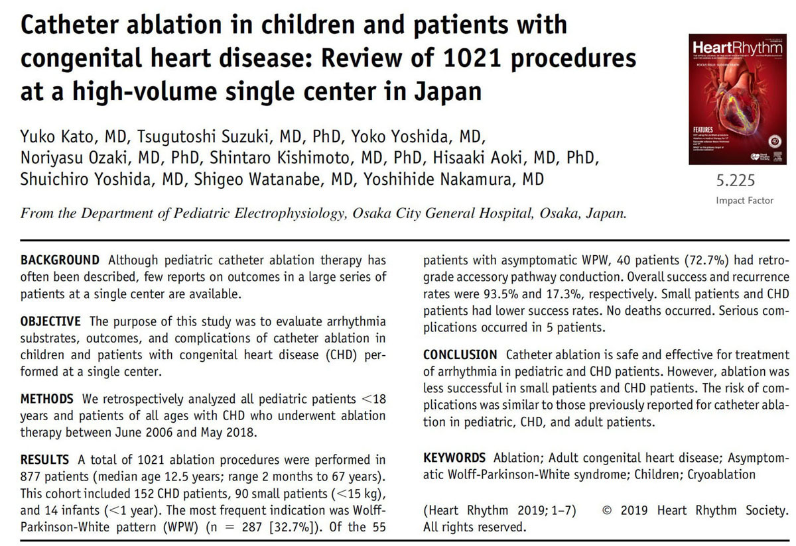
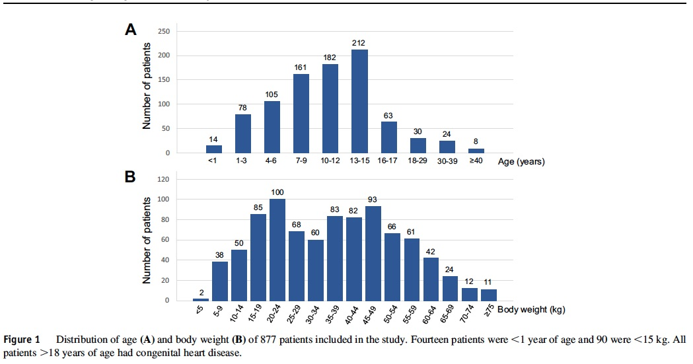
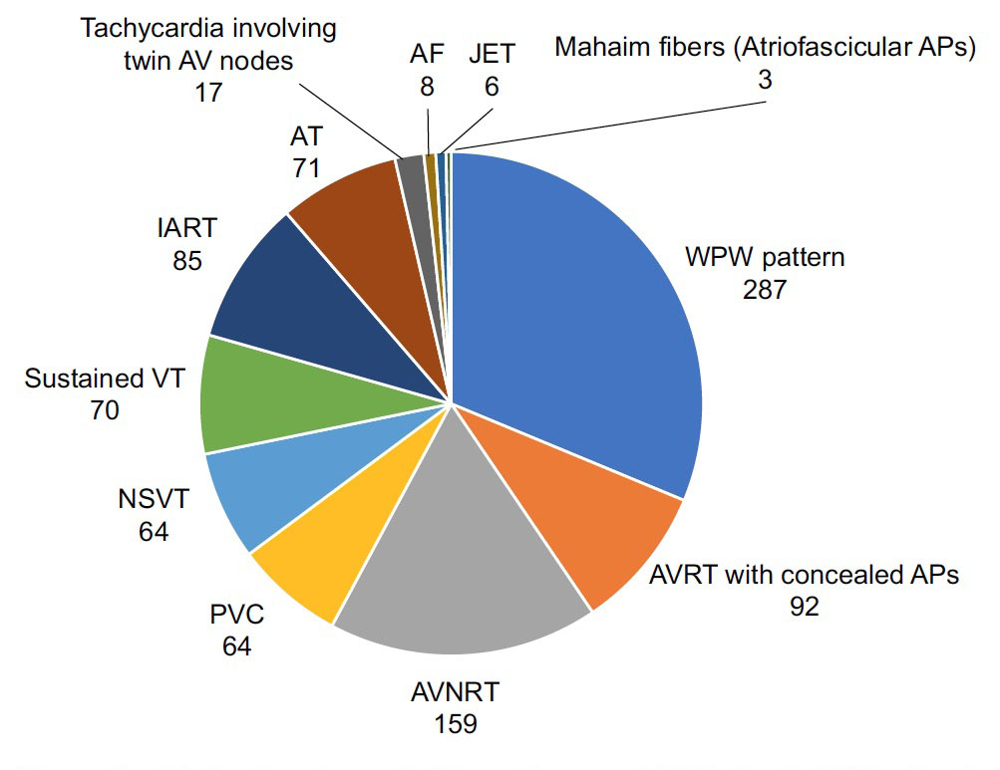
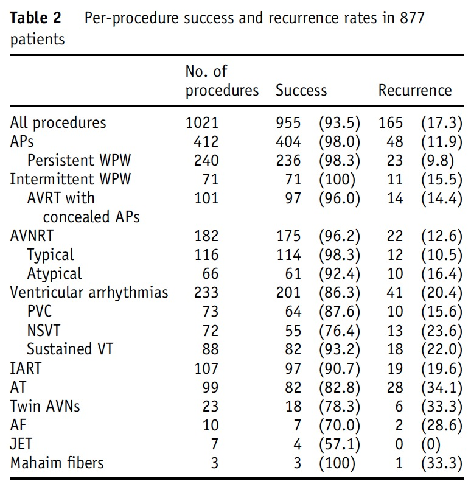
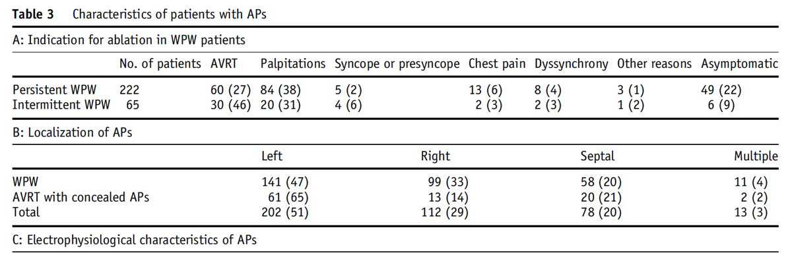
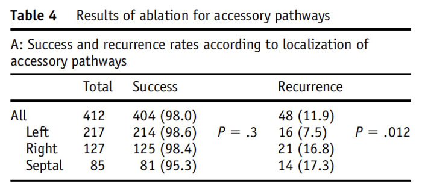
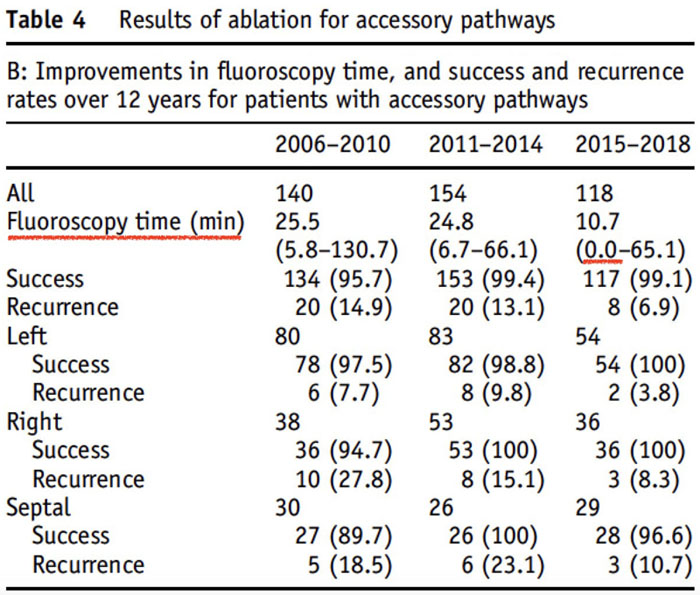
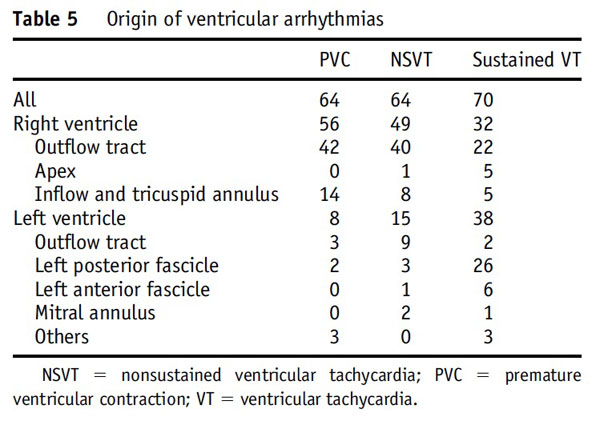
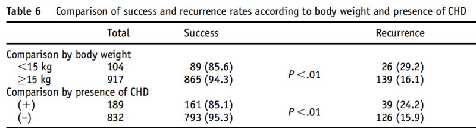

大阪市立総合医療センターに2006年に赴任してから12年で、小児不整脈のアブレーション症例が1000例を
超えたのを記念して、シニアレジデントの加藤有子先生にまとめていただきましたので、
Heart Rhythm (アメリカ不整脈学会雑誌)に掲載されました。
これからも、ますます多くの小児不整脈の患者が集まってくるよう、努力していきたいと思います。
(2019/10月)

上記は、当院の小児不整脈のアブレーション治療 1021例の治療成績の報告です。
年齢別と体重別です。新生児、乳児、幼児でもそうですが、
1歳以下、4歳以下でも不整脈に対しては治療を行っています。

疾患別の種類です。WPW症候群が約1/3を占めます。

治療成績です。

WPW症候群について、治療した後のリカレンス率の場所を記載しています。
過去は左 50%, 右30%, 中隔 20%でしたが、
現在成績は、左 65%, 右 15%, 中隔 20%と、
右側が少なくなっています。
この間で勉強してきた部分だと思います。

WPWの部位別、年齢別の成績です。
成功率が2015-2018年で劇的に少なくなっているのは、
CARTO UNIVU systemを採用したからです。
再発率が 0という理想的な成績が得られています (赤線)。


全不整脈の分布です。年齢別に右側の伝導路が劇的に減っています。

15kg以下の小児の成績、及び心房性頻拍や各種不整脈の治療成績です。
